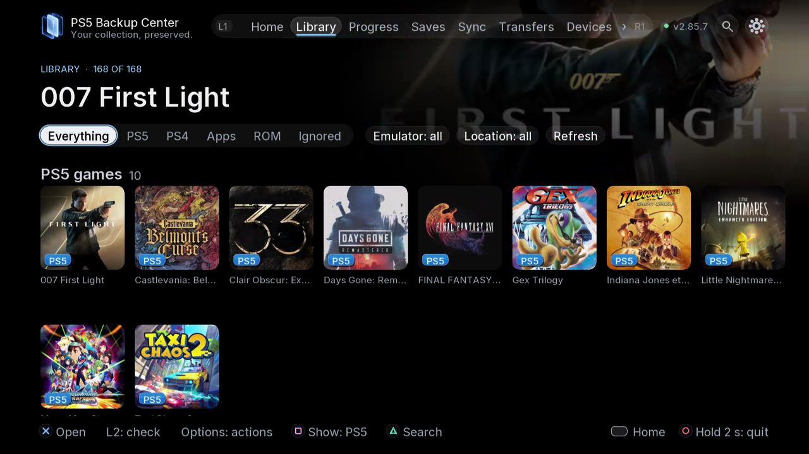

2.86.0
PS5 Backup Center
백업이 필요한 항목을 찾고 기존 사본을 비교하며 기기 간 교환을 정리하세요. PS5 Backup Center는 목록, 백업, 동기화, 전송을 TV와 브라우저에 모읍니다.
가이드 →Dropbox 프로덕션 승인은 심사 중입니다. PS5 간 자동 동기화와 다른 콘솔로의 설치는 초기 기능이며 추가 실기 테스트가 필요합니다.

로컬 네트워크에서 페어링한 PS5의 게임을 받으세요. TV나 브라우저에서 PS5, USB 드라이브, NAS, 클라우드 간 저장 데이터를 백업하고 비교하고 동기화하고 복원하세요. PS5 앱과 DLC, Switch 및 호환 에뮬레이터 저장 데이터도 관리할 수 있습니다.
휴대폰에서 Google Drive와 개인 OneDrive를 연결하세요. 개발 기간에는 Dropbox 등록이 제한됩니다.
새로운 기능 3.2.0 →가이드 →GitHub →미디어 →홈은 알려진 사본이 없는 게임, 더 새로운 사본, 중복, 비교나 점검이 필요한 데이터, 기기 동기화와 진행 중인 작업을 안내합니다. 카드는 목록과 기기 상태에 따라 달라집니다.
가이드 →
감지된 소스와 각 에뮬레이터 설정을 확인합니다. ROM 폴더, 설정 파일과 저장 위치를 확인하며 자동으로 되돌리면 감지 설정을 다시 사용합니다. ROM 상세에서 제공되는 구성 요소만 선택합니다. ROM, 상태 저장, 게임 저장 데이터는 다릅니다. Switch/Eden은 수신 프로필을 확인합니다.
가이드 →
기기 화면에서 NAS나 콘솔을 추가하고 저장 전에 대상을 확인합니다. NAS는 지원 프로토콜을 선택해 연결을 시험하고 폴더를 고릅니다. PS5끼리는 페어링 코드를 확인하며 Switch는 ftpd와 JKSV 내보내기를 준비합니다. FTP/FTPS는 사용 가능하며 SMB는 개발 중입니다.
가이드 →
19개 언어와 8개 테마를 선택할 수 있습니다. 효과음, 배경 음악, 음량은 따로 설정합니다. 연결을 바꾸기 전에 소스, 무시한 항목, 사용자와 기기를 확인합니다. 새 소식에서 변경 사항을 다시 읽을 수 있습니다. 감사의 말에는 제작자, 라이선스와 소스가 있습니다.
가이드 →19개 언어와 8개 테마를 선택할 수 있습니다. 효과음, 배경 음악, 음량은 따로 설정합니다. 연결을 바꾸기 전에 소스, 무시한 항목, 사용자와 기기를 확인합니다. 새 소식에서 변경 사항을 다시 읽을 수 있습니다. 감사의 말에는 제작자, 라이선스와 소스가 있습니다.


백업이 필요한 항목을 찾고 기존 사본을 비교하며 기기 간 교환을 정리하세요. PS5 Backup Center는 목록, 백업, 동기화, 전송을 TV와 브라우저에 모읍니다.
가이드 →
PS5 Center는 범위와 로드맵을 함께 구체화할 더 폭넓은 미래 프로젝트입니다. 게임과 앱 관리에 국한되지 않으며 아직 개발되지 않았습니다.
PS5 Center →PS5 Connector는 커넥터와 기존 솔루션으로 콘솔 기능을 확장하는 방안을 연구합니다. NAS, 공유, USB는 예시이며 확정된 범위가 아닙니다. 시제품이나 출시일은 발표되지 않았습니다.
PS5 Connector →